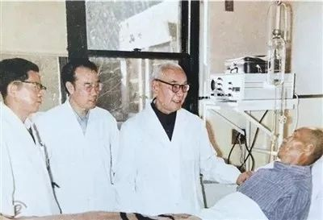

很少有人知道，这座为纪念黄家驷而设立的公园，同时也是玉山县人民医院的后花园.黄家驷的一生，为中国心胸外科事业立下了筚路蓝缕之功。然而，他的生活并不宽裕。很多人劝他联合开业，通过合理手段捞点收入。对此，黄家驷总是一笑了之：“我感兴趣的是当一名好教师，当一名好的胸外科医师。”在他看来，唯有这样的评价才值得奋力争取。1959年，黄家驷创建了8年制中国医科大学。身为校长的他，和蔼依旧，学生们经常为校长能够准确地叫出自己的名字而感动不已。直至耄耋之年，黄家驷还亲自招收研究生，惦记着如何将毕生所学悉数传与下一代。“师道垂世，永志不忘。”开门弟子石美鑫用这样8个字缅怀恩师。
黄家驷公园绿草茵茵、树木葱茏，公园最深处矗立着黄家驷先生的雕像。这座为纪念黄家驷而设立的公园，同时也是玉山县人民医院的后花园。相信黄家驷一定很满意后人的安排——即便故去多年，他依然能置身自己最熟悉的环境之中，与自己最热爱的病人相守相依。他以近代知识分子特有的睿智与深沉，默默关注着人世间的安康、幸福。家乡父老把对这位医学大家的崇敬和追思浓缩为一种朴素的情怀。
2005年，玉山县投资50多万元对玉山县城市纪念性主题公园－－黄家驷公园进行改造，改建后的黄家驷公园增加了绿地面积，突出了纪念黄家驷这一人文主线，成为该县又一著名的城市人文景观。
【医界丰碑】黄家驷：“当一名好教师、好医师”
他成功完成了我国首例食管癌根治术、首例针刺麻醉下胸外科手术，他主编的《黄家驷外科学》是我国外科学的权威著作。作为新中国胸外科和生物医学工程的奠基人、我国著名的医学教育家，他常说：“我感兴趣的是当一名好教师，当一名好的胸外科医师。”他就是中国科学院院士黄家驷。

图为黄家驷教授（左三）在查房。北京协和医院供图
黄家驷早年赴美求学，学成后毅然放弃优渥待遇回国开创胸外科事业。1945年归国途中，他的行李丢失，却带回整套胸外科手术器械，并运用这套设备较早地在国内开展各种类型的肺切除术、食管切除术、动脉导管结扎术和心包切除术等。
1957年，他组建国内第一所胸腔外科专科医院——上海市胸科医院，并总结千余例肺切除术治疗肺结核的临床经验，建立肺切除术操作常规，提出对肺癌早期诊断、早期治疗的倡议。1959年，他在北京创建国内第一所八年制医科大学——首都医科大学，亲自主持研究制订建校方针、教学计划，并亲自抓校舍建设、师资队伍建设和教学设备更新等，为全国各地培养了大批胸外科医学人才。
在第75届美国医学会医学教育大会上，黄家驷获得世界杰出医学教育家荣誉奖。
晚年的黄家驷不遗余力地致力开拓中国的生物医学工程学，成立了国家科委生物医学工程学科组。他辞世后，家乡父老在江西省玉山县建起黄家驷公园和他的塑像，寄托对这位医学大家的崇敬和追思。